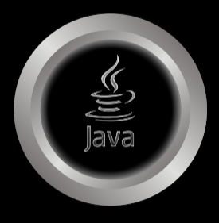
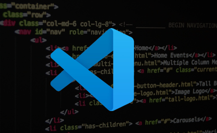

Nossa função é ajudar a alavancar o seu empreendimento no mundo misterioso da Web Pública e a se proteger de eventuais golpes ou fraudes que acontecem muito hoje em dia com o avanço e inovação da tecnologia.
Normalmente, com ênfase no front-end, realizamos serviços na WEB (VENDA DE SITES, PLATAFORMAS PARA CRM, LANDING PAGE etc.). Usamos ferramentas primitivas de computação e uma mistura de engenharia social. Usamos as melhores técnicas de invasão e pesquisa de informações e possíveis criminosos.
Usamos JAVA para criar aplicativos móveis e web, JAVASCRIPT para adicionar interatividade aos nossos sites e VSCODE - WEB para editar nossos códigos. Também usamos DEV TOOLS para depurar nossos códigos e HY SPY para capturar dados de usuários.
Nossas ferramentas e linguagens favoritas são:
 


Hoje, o meu time atua no mercado de soluções de e-commerce, CEO e Hacking há mais ou menos 6 anos. Com toda essa experiência, tanto prática quanto didática, abriu portas para mim e meus amigos em várias empresas no mundo Digital. E, caso tenha interesse em participar do nosso time, é só ficar esperto no Instagram da loja.
Usando apenas servidores validados e com canal e fluxos continuos a criptografados.
A agência de web design PK Digital Products, liderada por Pablo Kennedy, conhecido pelo apelido de Nike, cria arquivos escritos em HTML, CSS e JavaScript em forma de documento.
Nike começou a trabalha no arquivo no bloco de notas e usar ferramentas de Desenvolvimentos para acelerar todo o processo, onde ele cria a estrutura básica da página. Em seguida, ele adicionou o conteúdo e o estilo, utilizando as linguagens HTML e CSS. O arquivo normalmente é finalizado e publicado no GitHub e aguarda o cliente adquirir o codigo fonte e assim subir para um dominio dedicado.
Detalhando como funciona o processo de criação do nosso time.
O arquivo HTML é responsável pela estrutura da página, incluindo o cabeçalho, o corpo e o rodapé. O arquivo CSS é responsável pelo estilo da página, incluindo a fonte, a cor, o tamanho e a posição dos elementos.
A PK Digital Products é uma agência de web design especializada em desenvolvimento de sites, sistemas e aplicativos.
A empresa tem mais de 6 anos de experiência no mercado e atende clientes em todo o Brasil.
Sobre o autor
Pablo Kennedy é um desenvolvedor web com mais de 10 anos de experiência. Ele é especialista em HTML, CSS, JavaScript, PHP e MySQL. Ele também é um apaixonado por tecnologia e está sempre atualizado sobre as últimas tendências.
Nike é um homem dedicado ao seu trabalho e aos seus clientes. Ele sempre busca a excelência e está sempre disposto a ajudar seus clientes a alcançar seus objetivos.
Eu entrei nesse mundo através do Minecraft, hahaha!
Acredite, eu amava trocar as roupinhas (skins) dos personagens e adicionar funções que normalmente não estão visíveis para os usuários. Foi com essa minha mania de ficar codificando e decifrando vários tipos de códigos em jogos que eu gostava que me inspirei a estudar todos esses anos por prazer, visando sempre a eficiência e o equilíbrio entre a razão e os sonhos. Isso me deu uma nova visão de como funciona o mundo como um todo.
Aqui, minha função é desenvolver ambientes digitais que têm como foco conectar pessoas do mundo todo.
Eu simplesmente não sei dizer o quanto amo a área de programação, inovação e revolução da tecnologia.
Nela, estou sempre aprendendo mais e mais a cada dia que passa. Não importa o quanto eu estude, sempre haverá mais a se descobrir sobre este mundo misterioso e maravilhoso que é a internet.
Atualmente, é algo que faço por amor, com força de vontade e sem fins lucrativos. Sinto que isso é parte de mim.
Existe um Pablo de antes e depois da programação. Isso é fato, mas há algo diferente. Quando eu tenho insônia, escrevo código. Quando estou feliz, escrevo código. Quando alguma coisa está desabando e tudo dá errado, escrevo código para melhorar. E quando está tudo bem, fico o dia inteiro escrevendo código... haha, chega a ser engraçado.
Quando vi que estava nesse nível de dedicação por vontade própria, resolvi investir e tirar o máximo de proveito disso.
Isso não é um hobby, isso não é um simples trabalho involuntário. Isso é a junção de tudo o que sou.
Isso é parte de mim.
Isso é PK Digital Products.
- Nike
- Desenvolvedor de Software
- Uberlândia,MG Brasil.
Estou cursando lá do Fogaça, referência em Minas Gerais nas academias de polícia.
Instituto Fogaça
A Metodologia do Instituto Fogaça é tão eficiente que quase te obriga a ter resultados.
É mais ou menos assim:
- Explicamos os conteúdos.
- Te mostramos exemplos práticos.
- Fazemos questões com você.
- Te mostramos como acertar mais questões com as técnicas certas.
Em cada etapa (aula), nós:
Com isso, seus resultados são excelentes.
- O que funcionou para os alunos que foram aprovados.
- O que eles fizeram.
- E te damos modelos prontos para você copiar todas as estratégias.
Além disso, em todo o processo, nós te mostramos:
Atualmente, temos centenas de alunos aprovados utilizando o nosso método. Você pode ser o próximo aprovado.
“Aprenda com quem já chegou lá!”
O Instituto Fogaça foi fundado em 2016 pelo policial militar Kainan Fogaça, com o objetivo de ajudar pessoas a serem aprovadas em concursos públicos, especialmente concursos policiais.
Kainan Fogaça sempre foi apaixonado por concursos públicos e pela carreira policial. Ele se formou em Direito e, em seguida, ingressou na Polícia Militar de Minas Gerais. Durante sua carreira, ele percebeu que muitos candidatos a concursos públicos não tinham acesso a um bom treinamento e preparação.
Foi então que ele decidiu fundar o Instituto Fogaça. A escola oferece cursos preparatórios para concursos públicos, com foco em concursos policiais. Os cursos são ministrados por professores experientes, que são aprovados em concursos públicos.
O Instituto Fogaça rapidamente se tornou uma referência no mercado de cursos preparatórios para concursos públicos. A escola já ajudou milhares de alunos a serem aprovados em concursos policiais, incluindo concursos da Polícia Militar, Polícia Civil, Polícia Federal, Polícia Rodoviária Federal, entre outros.

- A qualidade dos professores, que são aprovados em concursos públicos;
- O método de ensino, que é baseado na prática e na resolução de questões;
- O suporte aos alunos, que é personalizado e oferecido por professores e coordenadores.
O sucesso do Instituto Fogaça se deve a vários fatores, incluindo:
O Instituto Fogaça é uma escola que acredita que todos podem ser aprovados em concursos públicos, independentemente de sua classe social ou nível de escolaridade. A escola oferece bolsas de estudo para alunos de baixa renda, e também oferece cursos preparatórios gratuitos para alunos que desejam se preparar para concursos policiais.
A história do Instituto Fogaça é uma história de sucesso e de transformação. A escola tem ajudado milhares de pessoas a realizarem seus sonhos de serem aprovados em concursos públicos, e tem contribuído para a democratização do acesso à educação.